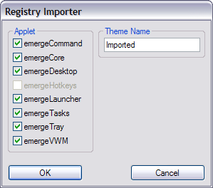

| About |
reg2xml is a small executable with the single function to convert registry-based settings (from Emerge Desktop 4.1.3 and prior) to a XML based Theme.
This utility typically needs to be used only once by users migrating from previous Emerge Desktop builds. If you are a first time user you can ignore this file. It will be removed in the next release.
reg2xml can be launched from the shortcut included on the Emerge Desktop Startup group or by executing the reg2xml.exe file located typically in %ProgramFiles%\Emerge Desktop.
emergeVWM is configured by pressing the Ctrl key and right-clicking on the emergeVWM window. This opens the Registry Importer configuration window:

In this window the user can select which applets' configuration should be imported to the XML based Theme. Applets which have no settings on the registry show as disabled (i.e. greyed out) as emergeHotkeys, in the example above.
By default the imported theme will be named Imported unless the user modifies the Theme Name field
The Imported theme will be saved in folders which are located in the User Profile folder under "\Application Data\Emerge Desktop\themes\" (see also Directory Structure)
The newly created Imported theme can be loaded using the Theme Manager.
| Usage |
When importing settings from the registry, checking the boxes will import the settings for the respective applet.
Importing the settings through reg2xml does not delete them from the registry. Outdated registry entries are only deleted from the registry during Uninstall. Experienced users can delete the whole HKEY_CURRENT_USER\Software\Emerge Desktop key after conversion to XML by using regedit.